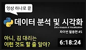

Up next
-
웹사이트 따라만들기, 반응형 헤더편 | 프론트엔드 개발자 입문편: HTML, CSS, Javascript 드림코딩 by 엘리 조회수 16만회
-
초보개발자 포트폴리오 준비 이것으로 끝 / 프로그래머 되는법 / 프로그래머 공부 / 프로그래머 취업 개발하는 정대리 조회수 1만회
-

파이썬 코딩 무료 강의 (활용편5) - 데이터 분석 및 시각화, 이 영상 하나로 끝내세요 나도코딩 조회수 10만회